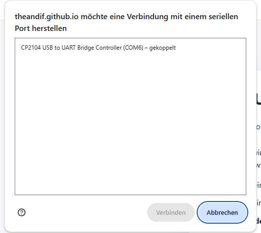
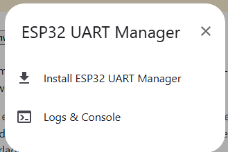
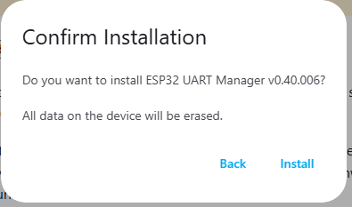
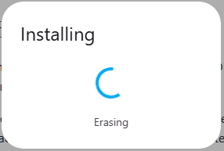
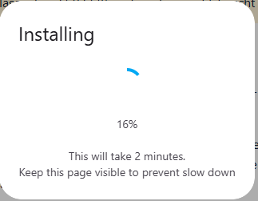
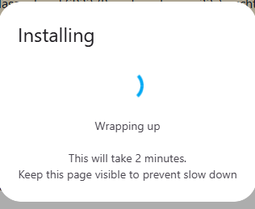
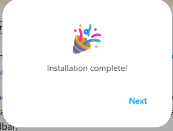
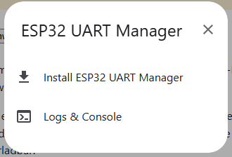
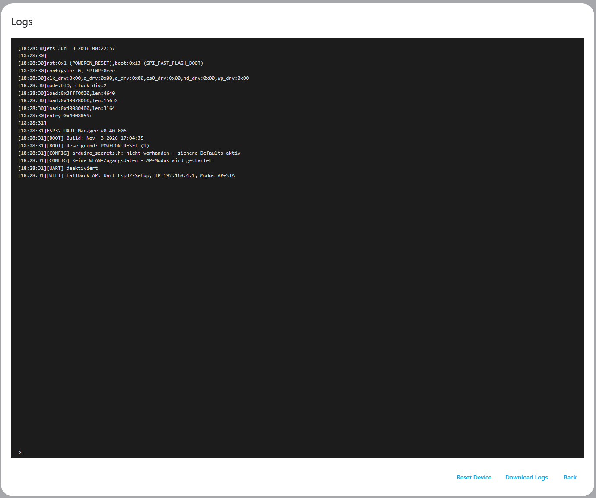

ESP32 UART Manager
Die Firmware wird direkt aus dieser Webseite auf den angeschlossenen ESP32 übertragen. Eine lokale Entwicklungsumgebung ist nicht nötig.
- ESP32 mit einem Daten-USB-Kabel an den Computer anschließen.
- Diese Seite in Chrome oder Edge auf dem Desktop öffnen.
- Auf Verbinden klicken, den seriellen Anschluss auswählen und die Installation bestätigen.
Achtung: Das vollständige USB-Image schreibt auch Bootloader und Partitionstabelle. Dabei können bestehende Geräteeinstellungen verloren gehen. Vorher die Konfiguration sichern. Nur für den klassischen ESP32 (Board: nodemcu-32s), nicht ESP32-S3/C3.
Bebilderte Anleitung zur USB-Firmware-Aktualisierung
Die folgenden Bilder zeigen einen tatsächlich durchgeführten Installationsablauf. Sie stammen von der älteren Firmware v0.40.006; die hier oben angebotene Versionsnummer kann daher abweichen. Die Schritte gelten für den unterstützten klassischen ESP32.
Vorher sichern: Das vollständige Flash-Image löscht den Flash-Speicher. Dabei gehen gespeicherte Einstellungen wie WLAN-Zugangsdaten verloren. Nur fortfahren, wenn du das Gerät neu einrichten kannst.
- ESP32 per USB verbinden und Port auswählen. Verbinde den ESP32 mit einem USB-Datenkabel, klicke oben auf „ESP32 verbinden und Firmware installieren“ und wähle den passenden seriellen Anschluss (hier beispielhaft CP2104 / COM6). Anschließend auf „Verbinden“ klicken.

1. Den Anschluss zuerst markieren, dann „Verbinden“ auswählen. - Installation starten. Im geöffneten ESP32-UART-Manager-Menü „Install ESP32 UART Manager“ auswählen.

2. Installationspunkt auswählen. - Löschwarnung bestätigen. Kontrolliere die angebotene Version. „All data on the device will be erased“ bedeutet, dass die bisherigen Flash-Daten gelöscht werden. Nur nach Sicherung auf „Install“ klicken.

3. Version prüfen und Löschvorgang ausdrücklich bestätigen. - Löschen abwarten. Während „Erasing“ angezeigt wird, den ESP32 nicht abziehen.

4. Flash-Speicher wird gelöscht. - Firmware übertragen lassen. Der Fortschritt wird in Prozent dargestellt. Browserfenster sichtbar lassen, Computer nicht in den Ruhezustand versetzen und das USB-Kabel angeschlossen lassen.

5. Übertragung läuft; die Dauer kann variieren. - Abschluss abwarten. „Wrapping up“ bedeutet, dass der Installationsvorgang noch nicht beendet ist.

6. Abschlussarbeiten laufen noch. - Erfolgsmeldung prüfen. Erst bei „Installation complete!“ ist der Vorgang abgeschlossen. Mit „Next“ fortfahren.

7. Erfolgreich abgeschlossene Installation. - Optional die serielle Konsole öffnen. Nach „Next“ im Menü „Logs & Console“ wählen.

8. Das Diagnosemenü hilft bei der ersten Inbetriebnahme. - Startmeldungen und Version kontrollieren. In der Konsole können die Startmeldungen, die Firmware-Version und die Netzwerkeinrichtung überprüft werden. Im Beispiel startet mangels WLAN-Zugangsdaten ein Fallback-Access-Point. Die angezeigte Version v0.40.006 stammt aus dem Beispiel und muss nicht der aktuell angebotenen Version entsprechen.

9. Beispiel für Startprotokoll und Diagnoseausgabe.
Bei Verbindungsproblemen andere Programme mit geöffnetem COM-Port schließen. Gegebenenfalls BOOT während des Verbindens gedrückt halten.
Der Web-Flasher ist für eine öffentliche GitHub-Pages-Seite vorgesehen. Der Quellcode im privaten Repository wird dadurch nicht veröffentlicht; das angebotene Firmware-Image ist aber öffentlich herunterladbar.
Entwicklungsfirmware: keine freigegebene Produktversion. Verwendung auf eigene Verantwortung.